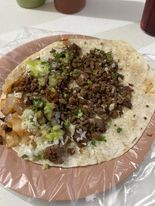

Tacos de Biztec

Tacos de biztec from Carlos' resturant
Ingredients
- Maztec
- Water
- Queso fresco
- Biztec con chili
- Cilantro
- Diced onions
- Guacamole
Recipe
- Mix Maztec and warm water
- Make a small ball and press in tortilla press
- Fry on grill at medium heat for 1-2 minutes on both sides
- Heat the biztec con chili
- Put biztec on cooked torilla
- Add cilantro, diced onions, and guacamole
- Take a moment to be proud of what you cooked and then enjoy!